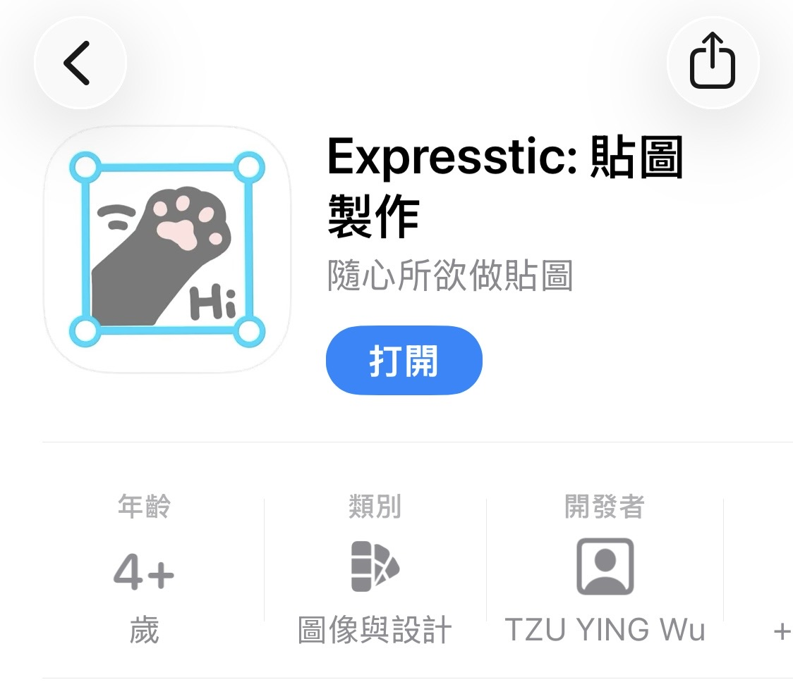
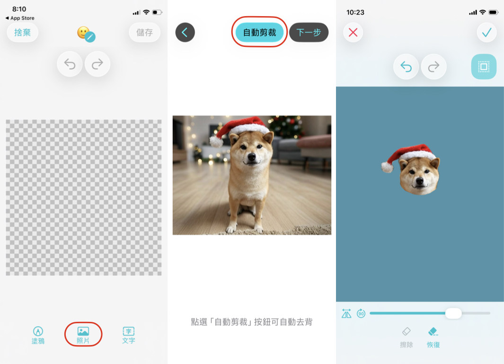
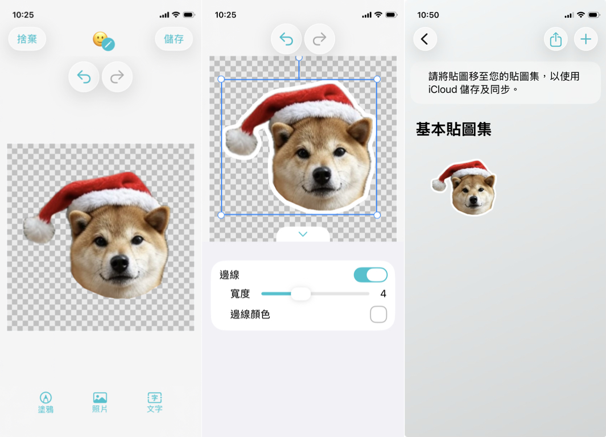
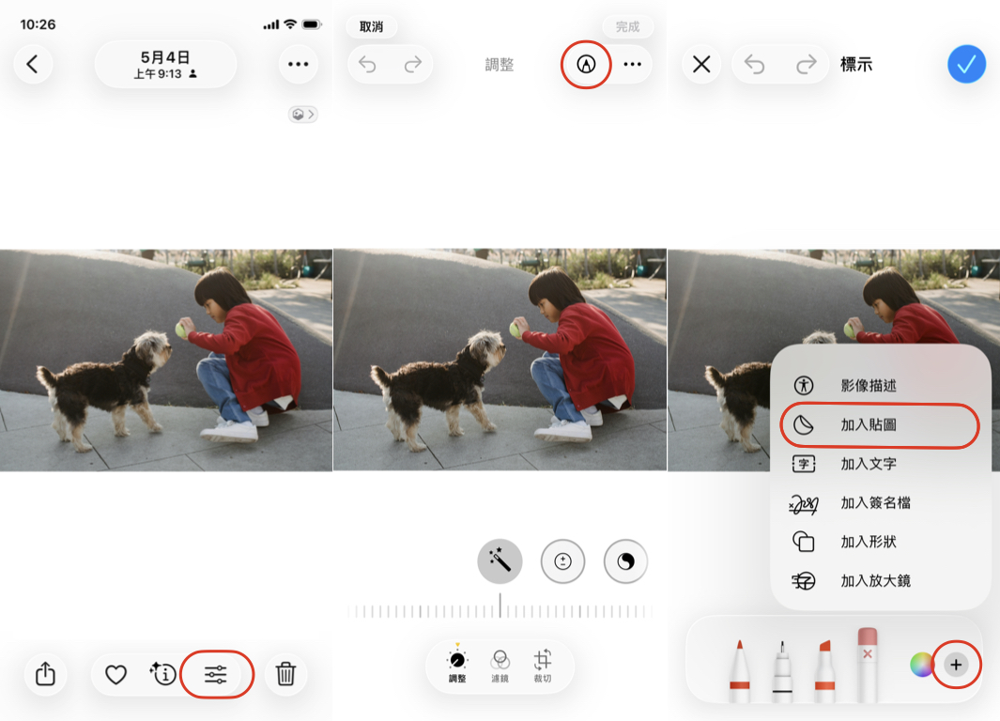
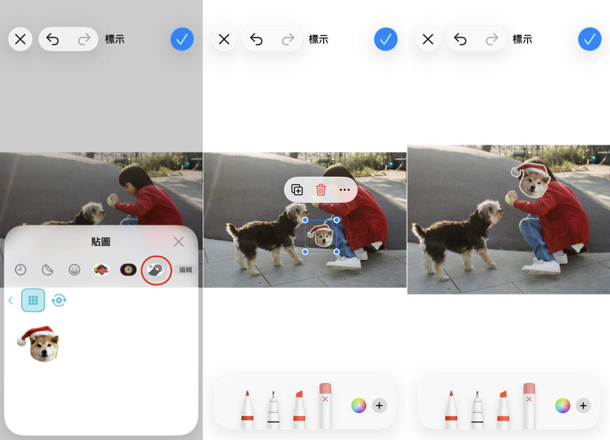
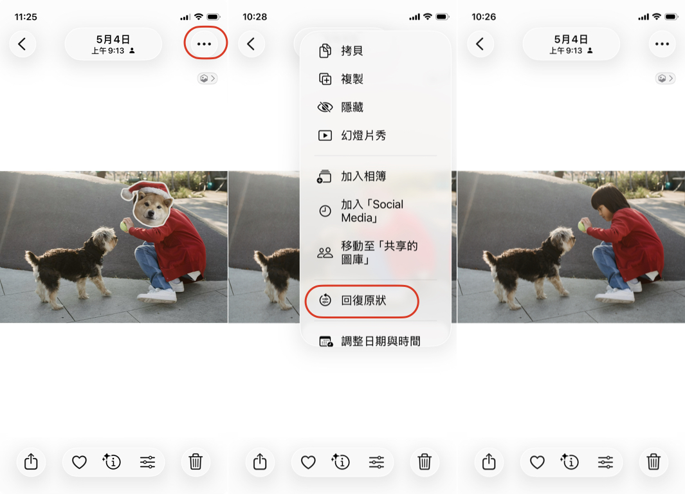

超簡單自製 iPhone 照片遮臉貼圖，用內建相簿擺脫撞款貼圖！
如果你也喜歡分享照片到社群平台，手機裡一定會有修圖軟體，除了可以修飾人物外型，最重要的功能就是碼掉敏感的資訊，例如合照中朋友或孩子的臉，或是咖啡廳中其他顧客的臉。一般為了美觀都會使用修圖軟體提供的遮臉貼紙，或是 Emoji ，少了一點個性。碼好的照片也不能恢復成原狀，必須要另存照片，數量一多空間佔用也是相當可觀。
其實 iOS 17 之後，你可以直接用 iPhone 內建相簿，實現在原圖上加上自己的遮臉貼紙。不僅簡單快速，發完社群之後還可以隨時恢復原狀，節省複製、刪除圖片的時間！本篇將介紹如何使用 Expresstic: 貼圖製作 App 做出風格遮臉貼紙、直接在內建相簿上使用，以及如何還原成原圖。
首先，用 iPhone 或 iPad 下載 Expresstic (App Store 連結)，如果喜歡畫畫的話，用 iPad 會更適合。

打開 App 之後，會發現已經在基本貼圖集裡面了，按下 + 號可開啟貼圖編輯器，開始第一張貼圖的製作。

底部欄位有三個按鈕，分別用來新增塗鴉、照片和文字。我們這邊用照片來示範：點選「照片」開啟相簿，我選擇的是這張柴犬的照片，選好後點選「自動剪裁」去背。因為是遮臉貼紙，我只留臉部，所以按下一步手動精修時，把身體的部分用手塗掉。

完成後，點選右上角的勾勾，這樣就完成一個照片物件了。點選物件可以看到控制框，此時你可以拖動整個物件來移動他、拖曳控制框上的點點可以縮放物件和旋轉物件。 接下來，我們幫物件描邊，點選底部欄位的「編輯樣式」可以為物件加入邊線，並調整邊線寬度和顏色。這樣就完成一張遮臉貼紙囉～接下來我們就可以去相簿使用它啦！

打開 iPhone 內建相簿，點選編輯 → 畫筆 → + 號 → 加入貼圖

在 Expresstic 分頁中，可以找到我們剛剛做好的貼圖。點一下把它加進來，調整一下大小和位置，就可以用來遮小朋友的臉了！

喜歡畫畫的人，可以使用 Expresstic 的塗鴉功能自己畫。也可以用其他繪圖軟體畫完，再用上面教的照片的方式匯入你的作品喔！以後在社群發照片，連遮臉貼都是你專屬的風格～
要變回原圖也相當的簡單，只要點選照片右上角的三個點圖示，選擇「回復原狀」就可以了。

是不是很簡單呢？下次發照片就試試看吧！